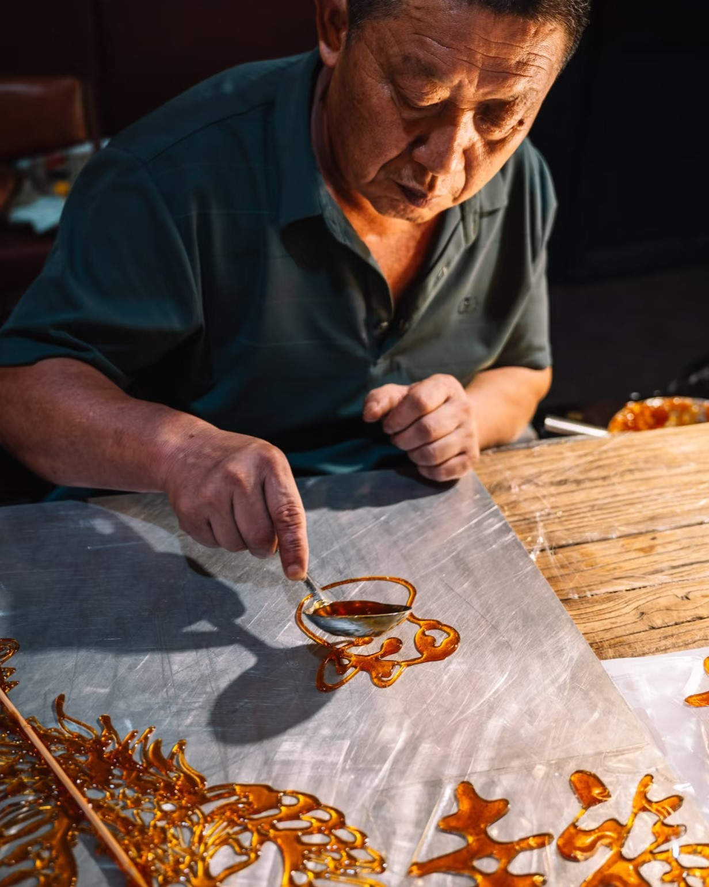
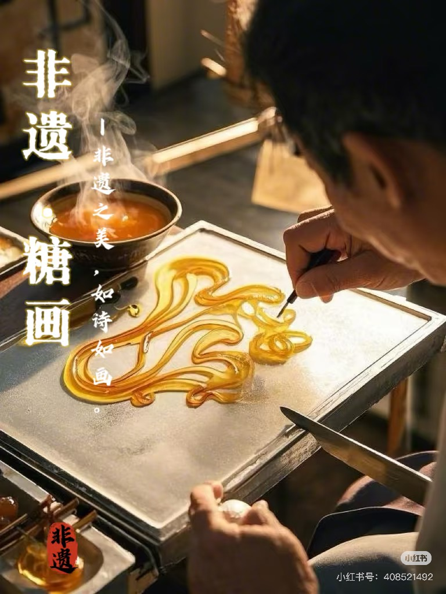

糖画，俗称"倒糖人儿""糖灯影儿"，是一种以糖为材料进行造型的传统民间手工艺。糖画艺人将白糖或红糖加热熔化后，用小勺舀起糖液，在石板上快速浇铸，创作出十二生肖、花鸟虫鱼、人物故事等各种造型。造型完成后，用小铲刀将糖画铲起并粘上竹签，便形成了既可观赏又可食用的艺术品。

非遗传承人现场创作
1 糖画的艺术特点
-
即时性：糖画制作需在糖液凝固前的短时间内完成，通常仅有几十秒的操作窗口。
-
一气呵成：作品必须一次性完成，无法修改，充分体现了艺人的高超技艺。
-
立体感强：通过糖液的厚薄变化形成明暗层次，呈现出独特的立体效果。
-
题材广泛：涵盖从传统吉祥图案到现代流行元素，题材丰富多样。
-
可食可赏：兼具艺术品的观赏价值与美味零食的食用价值。
2 糖画的分类
按制作手法分
- ■ 平面糖画：在平面上制作的二维糖画
- ■ 立体糖画：通过多层叠加形成的三维效果糖画
- ■ 吹糖人：将糖吹制成空心造型的糖画
按题材内容分
- ■ 生肖动物：以十二生肖等吉祥动物为题材
- ■ 花鸟鱼虫：以各种花卉、鸟类、鱼类等为题材
- ■ 人物故事：以历史人物、神话传说等为题材
- ■ 现代创意：以卡通形象、流行元素等为题材
3 糖画的文化价值
民俗价值
反映了中国传统民俗文化和民间审美观念
艺术价值
展现了独特的民间造型艺术和精湛的工艺技巧
教育价值
承载着传承中国传统文化和手工技艺的使命
经济价值
具备旅游纪念和文化创意产品的开发潜力
"
糖画是甜蜜的艺术，是流动的雕塑，是瞬间的永恒。
"
4 糖画的现状与保护
随着现代社会的发展，传统糖画艺术面临着传承困境。2008年，糖画被列入国家级非物质文化遗产名录，各地政府和民间组织积极开展保护工作：
1
建立糖画传承人制度
2
开展糖画技艺培训
3
举办糖画艺术展览
4
开发糖画文创产品
5
推动糖画进校园活动

国家级非物质文化遗产
5 糖画制作过程视频
这段视频完整记录了糖画从熬糖、调色到绘制成型的全过程，展现了非遗传承人精湛的技艺和糖画艺术的独特魅力。